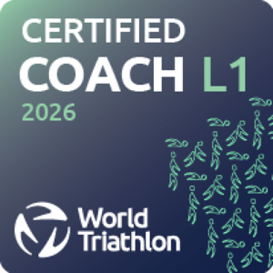
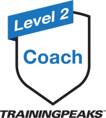

我從來不是天賦型選手。能走到今天，靠的是始終如一的堅持，以及科學化、週期化的訓練方法——這是我十年來的訓練軌跡。
大學以前練田徑，成績並不出色，也不是天賦型選手。
開始接觸鐵人三項與週期化訓練觀念，第一次真正看見自己的轉變，先從奧運距離（51.5）比起。
發現游泳實力落差過大，大三轉戰70.3（113），沒想到一比就是六年，成績開始持續進步。
於紐西蘭陶泊，站上IRONMAN 70.3世界錦標賽的起跑線。
2023年底跑出初馬2小時41分作為前導，隔年完成人生第一場226，成績9小時30分。
226最佳成績進步到9小時05分，在Challenge Taiwan 226K奪下總冠軍（9:15），同年於Formosa Xtreme Triathlon獲得第四名。
拿下IRONMAN Taiwan總冠軍，今年十月即將站上KONA世界錦標賽的起跑線。
這段路讓我更確定一件事：天賦、條件從來不是關鍵，真正重要的是能否周而復始地投入、並用對的方法訓練。我的教練理念也建立在這裡——不是給你一份「看起來很厲害」的課表，而是找到一個結合科學化、週期化並且可執行的訓練規劃，幫助你在忙碌的生活裡，依然能穩定進步、走得長久。
適合在工作與生活責任之間仍堅持訓練的選手，你正需要一份能配合真實生活的訓練計畫。
先進行免費諮詢，了解你的工作時間、訓練經歷、器材與比賽目標，並完成一週的試合作訓練，再由你決定是否接續合作。諮詢過程無任何綁定、無需付費。
透過 TrainingPeaks 檢視完成度、心率與配速，根據恢復狀況，並搭配每月線上會議，密切且動態地依生活變化調整未來的訓練安排。
提供競賽配速、補給、轉換區等相關實務競賽策略，減少比賽失誤、提升運動表現。
TrainingPeaks 是我用來規劃、追蹤每一份課表的系統，讓訓練不只是憑感覺。從你完成的每一次游泳、單車、跑步，到心率、配速與恢復狀態，都會回饋進下一步的調整裡。
所有方案均包含 TrainingPeaks 帳號及免費初次諮詢。
完整鐵人三項週期化訓練，整合游泳、自行車、跑步三項規劃，適合準備標鐵、70.3 或 226 各級距離賽事的選手。
游泳、自行車、跑步任單項訓練規劃，適合準備馬拉松、路跑或自行車賽事之選手。
以同樣的週期化邏輯設計，一次購買、直接匯入 TrainingPeaks，照著練就能準備好你的目標賽事。
每一項合作都可依參與對象、人數、期間與需求進行調整。
比賽需要想像力，練習則要有理性和現實，在兩者之間需要睡覺。
人們想複製仙丹課表、冠軍做法，可惜的是，世界裡根本不存在所謂的SOP，人會變，經驗無法被複製，我們要做的是，找到一個正確且可執行的策略。


訓練知識、比賽紀錄與數據分析，寫給想把有限時間練在刀口上的你。
楊博智（Po Chih Yang）投入鐵人三項十年，是 World Triathlon Level 1 與 TrainingPeaks Level 2 雙認證教練。從田徑成績平平起步，靠科學化週期訓練與始終如一的堅持，一路拿下 2026 IRONMAN Taiwan 總冠軍、2025 Challenge Taiwan 226K 總冠軍，並取得 2026 KONA 世界錦標賽資格。
可以。重要的是你有明確目標，並願意穩定投入訓練，不論是初次挑戰標準距離，或準備進階賽事都適合。
這正是教練設計的初衷。在安排訓練之前，會先了解你的工作型態與生活安排，讓計畫配合你的生活。
每週投放下週的訓練內容，再依據你的實際狀況動態調整。
30~60分鐘的視訊或語音通話，讓你完全了解訓練方案的運作，聊你的目標、目前的訓練狀況，以及是否適合一起合作，沒有銷售話術。
可以。主題可包含目標執行、時間規劃、生活健康，與長期複利表現相關，這是我可以提供且適用於任何人的價值。
可以。方案可包含成員評估、賽事規劃、團體訓練、相關訓練知識課程等。
不是，若你是跑者、騎士，或是正在準備跑步比賽，我們也提供單項目的訓練。